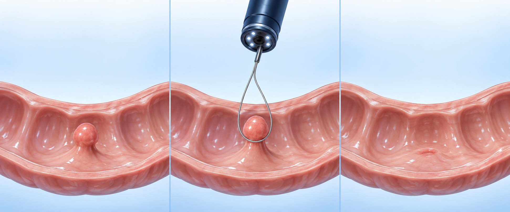

선종은 암이 될 수 있는 ‘씨앗’입니다

① 점막에 난 씨앗(용종)
② 내시경으로 떼어 냄
③ 씨앗이 없어진 점막
원장님 설명 · WHAT IT MEANS
- 선종(Adenoma)은 시간이 지나면 암이 될 수 있는 씨앗입니다.
- 씨앗일 때 완전히 떼면 암을 막는 데 도움이 됩니다. 결과지에 선종이라고 적혀 있어도 암을 걱정하라는 뜻이 아닙니다.
- 다만 씨앗은 또 생길 수 있어서 뗀 뒤에도 추적검사가 필요합니다.
- 용종은 나이와 유전적 요인의 영향을 받습니다. 채식을 해도 생길 수 있습니다.
결과지에 적힌 이름 읽기
| 결과지 표현 | 무슨 뜻인가요 | 원장님 한마디 |
|---|---|---|
| 과형성 용종Hyperplastic polyp | 선종이 아닌 용종입니다. 대부분 걱정하지 않아도 됩니다. | 착한 용종 |
| 관상선종Tubular adenoma | 가장 흔한 선종입니다. | 순한 맛 |
| 융모선종 · 관상융모선종Villous adenoma | 융모 성분이 섞인 선종입니다. | 중간 맛 |
| 톱니상 선종Serrated adenoma | 톱니 모양의 선종입니다. | 매운 맛 간격을 짧게 |
※ ‘맛’은 비유입니다. 위험은 크기·개수·이형성도 함께 봅니다(큰 관상선종도 고위험).
다음 대장내시경은 언제 받나요?
| 이번 결과 | 다음 검사 |
|---|---|
| 용종 없음 | 5년 뒤 |
| 과형성 용종만 | 3~4년 뒤 |
| 선종 | 2~3년 뒤 |
| 큰 선종 · 고위험 | 1년 뒤* |
나의 다음 검사 시기는 조직 결과를 보고 알려 드립니다.
함께 알아 두세요 · GOOD TO KNOW
- *큰 선종은 개수·뗀 방식에 따라 6개월~3년으로 달라집니다. 2cm 이상을 나누어 뗐다면 6개월 뒤 확인합니다.
- 이 간격은 증상이 없다는 전제입니다.
- 결과가 좋으면 문자, 나쁘면 전화로 알려 드립니다.
- 실손 서류는 조직 결과가 나온 뒤에 발급합니다.
자주 하시는 오해
MYTH 1
“선종이면 큰일이다”
암이 아닙니다. 암이 될 수 있는 씨앗을 미리 뗀 것입니다.
MYTH 2
“조직검사를 하면 암인가”
뗀 용종은 종류를 확인하려고 모두 검사합니다. 암을 의심했다는 뜻이 아닙니다.
MYTH 3
“위 용종은 왜 다 안 떼나”
먼저 조직검사로 종류를 보고 선종만 뗍니다. 위는 대장보다 선종이 드물고, 뗀 자리가 위산·음식물에 닿아 인공 궤양(출혈 등) 위험이 떼는 이득보다 커서 지켜봅니다.
검사 날짜를 기다리지 말고 바로 상의하세요 · SEE US SOONER
- 변에 피가 묻어 나오거나 검은 변을 볼 때 — 피가 많거나 어지러우면 응급실로
- 변이 가늘어지거나 배변 습관이 달라졌을 때
- 이유 없이 체중이 줄거나 빈혈·어지럼이 있을 때
- 가족 중 대장암이 새로 진단되었을 때